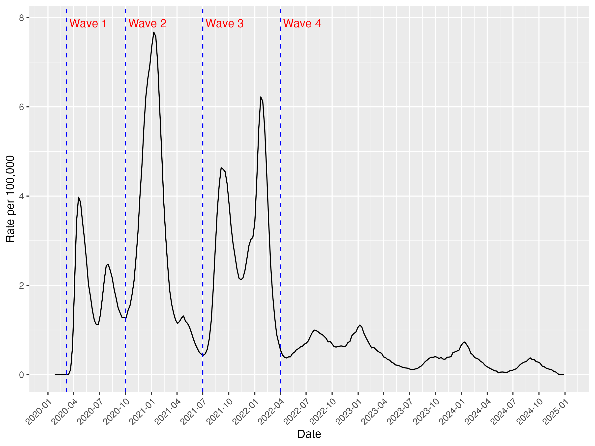
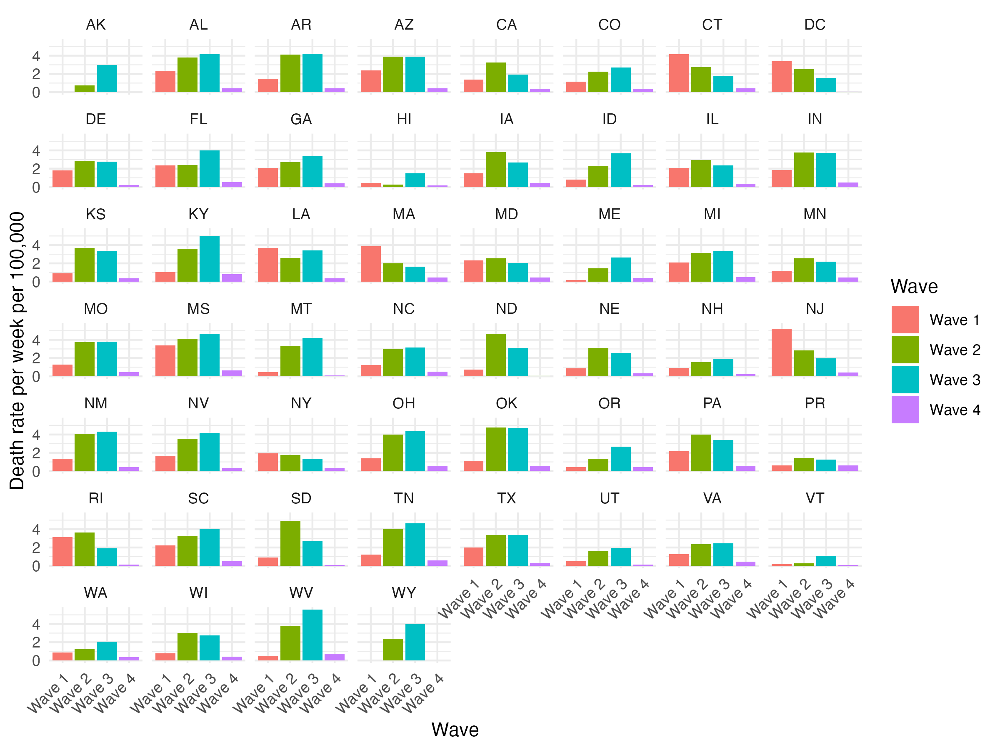
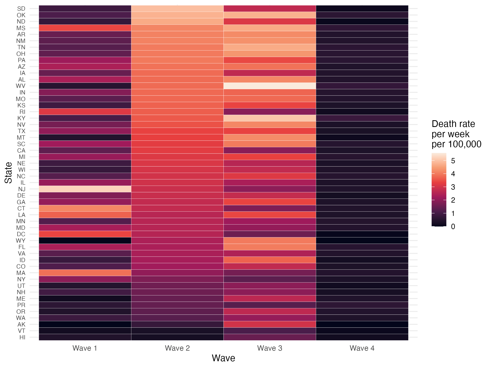
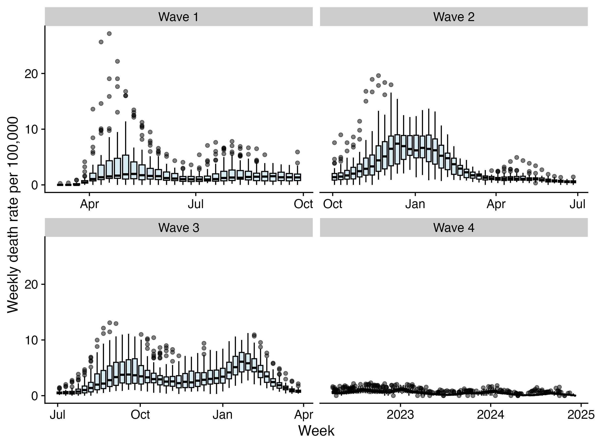

Final Project: COVID-19 Mortality across the United States
Abstract
The COVID-19 period was not a linear progression of mortality rates but rather followed a wave pattern including periods with high mortality weeks and recovery. Responses to the crisis varied across the country. In order to understand the extent of the effect of COVID-19, it is crucial to examine sub-national data instead of relying on single summary national statistics. States were differently affected by the crisis. In the first wave, New Jersey, Connecticut and Massachusetts were heavily impacted but were able to recover and see declining weekly mortality rates through the duration of the crisis. On the other hand, states like Kentucky and West Virginia were heavily impacted in the second and third waves and had increasing mortality in each subsequent wave. Regional comparisons show states in the southeast region to be most impacted. An analysis of the state level mortality rates reveals strong neighborhood effects and pandemic preparedness should be collaborative to account for the interstate connectivity. Additionally, varying levels of state level investment in health care infrastructure, vaccination rates and public health communication could account for the varying mortality rates across states.
Introduction
It is undeniable that the COVID-19 pandemic had widespread affects across the country and the world at large. In Tanzania, my country of origin, the government refused to acknowledge the existence of COVID-19 with detrimental effects on the nation. In parallel, the United States as a global destination was heavily impacted and responses differed depending on the state politics and health care systems. During the pandemic period starting in 2020, there was widespread fear, misinformation and disinformation. This was reflected both nationally and at the state level. States across the US had varying responses to the pandemic including both lockdown measures and vaccination coverage. This project aims to study COVID-19 mortality rates across the country in multiple ways. Firstly, the COVID-19 pandemic period will be divided into 4 waves to understand the period where mortality rates were highest. Secondly, state to state comparisons of the crisis will be carried out to get insight on whether some states fared better than others. Lastly, state to state comparisons across the waves will also be analyzed to understand how the progression of the crisis differs in different states.
Methods
This analysis relied on data from multiple sources that were processed and merged to create the final analytical dataset. Firstly, for the main outcome of COVID-19 deaths, data was pulled from the CDC’s API. Death data was reported for each week and state from March 2020 to December 2024, the first and latest death reports respectively. This data is collected through a combination of vital statistic systems and state and local health department reporting and verification. A regional crosswalk using definitions from the CDC 10 Public Health Service (PHS) was used to map each state to the respective regions.
Since states have varying population levels, a comparison of absolute death counts would be invalid in studying the impact of COVID-19 across varying states. Population data was pulled from the US Census API for 2020 – 2021 and supplemented with vintage US census estimates capturing 2022 and 2023. The US Census did not have 2024 populations therefore a simple linear regression model using the data from 2022 and 2023 was used to extrapolate 2024 population. This approach assumes a constant rate of change in population growth and does not capture non-linear trends and demographic shifts that could have impacted population. However, given that the span is one year, the assumption is reasonable since population shifts usually take much longer. The linear model is below:
\(Population_{state}\) = \(\beta_0\) + \(\beta_1\) \(Year_{state}\)
The study uses death rates per 100,000 to standardize mortality estimates across states. With 50 states and the data spanning 4 years, single summaries of mortality rates by state are often less helpful in identifying underlying patterns and trends. The study will rely primarily on different forms of data visualization including heatmaps, bar charts, boxplots and choropleth maps to identify trends and variations across states and periods. Since the analysis involves a spatial component of the effects of COVID-19, a shapefile of the United States was used to overlay mortality rates by state. Additionally, descriptive statistics including measures of central tendency as well as dispersion will also be utilized to add to the visualization.
To compare mortality rates across different periods of the pandemic, the measure of deaths per week per 100,000 was used to account for the varying number of weeks in each period. This will standardize the analysis and enable valid comparisons. The periods chosen are based on visual inspection of the mortality estimates over time capturing sharp increases in mortality indicating a new outbreak.
Results
The pandemic period between January 2020 to December 2024 was split into 4 waves shown in Figure 1. The first wave is 30 weeks long from March 2020 through September 2020. This wave begins on the first week with reported COVID deaths and ends right before the next spike in death rates on October 1. The second wave extends for 39 weeks from October through June 2021. This wave of the pandemic had the week with the highest mortality rate of just under 8 deaths per 100,000 in January 2020. The third wave begins on July 2021 and ends 39 weeks later in March 2022. This wave had two sharp increases and declines in mortality rates with the worst week in January 2022 with 6.2 deaths per 100,000. Lastly, the fourth wave has more stable weekly mortality rates ranging from 0 to 1 death per 100,000 between April 2022 to December 7th – the last reported death in the data.
The regional data in Appendix 1 also displays similar trends with more granularity on the particular regions that are mainly responsible for the fluctuations noted in the national estimates. In the first wave, the New York, New Jersey, Puerto Rico and Virgin Island areas are the main contributors to the high mortality rate. In the second wave, this is replaced by Mountain states. In the third wave and fourth waves, the stark distinctions between the regions generally start to converge.
Figure 1: National mortality rates (2020-2024)

State to state comparisons in each wave reveal large differences in mortality rates. Figures 2 and 3 below visually show these disparities across states and waves. Starting from the first wave, New Jersey had the largest death rates at 5.2 deaths per week per 100,000 and Alaska had no deaths. The average weekly death rate in the first wave was 1.8 deaths per 100,000 with a standard deviation of 1.12 as seen in Table 1. The second and third highest mortality states in this wave are both in New England (Connecticut and Massachusetts) and had mortality rates larger than two times the standard deviation above the mean. Vermont, Maine and Wyoming were better than other states in this wave (See Appendix 2).
In the second wave, all states were affected. South Dakota was affected most with a weekly death rate of 4.9 deaths per 100,000 and Hawaii was least impacted with 0.23 deaths per 100,000. The mean weekly death rate was 2.98 deaths per 100,000 with a standard deviation of 1.1. Oklahoma and North Dakota also had mortality rates similar to South Dakota while Vermont maintained low mortality rates seen in the first wave (See Appendix 3).
In the third wave, West Virginia was most impacted with 5.6 deaths per week per 100,000 and Vermont was the least affected state. The mean weekly death rate was 2.97 deaths per 100,000 and a standard deviation of 1.09. There was a strong regional effect with states in the Southeast region like Kentucky, Tennessee and Minnesota heavily impacted compared to states in New England (See Appendix 4).
Lastly, mortality levels in the last wave are much lower with Kentucky having the highest weekly mortality rate of 0.82 deaths per 100,000 while Alaska reported no COVID deaths in this period (See Appendix 5).
Figure 2: Mortality rates across states and waves (2020-2024)

Figure 3: Mortality rates across states and waves: heatmap (2020-2024)

Table 1: Death rate per week per 100,000 statistics for each wave (2020-2024)
| Wave 1 | Wave 2 | Wave 3 | Wave 4 | |
|---|---|---|---|---|
| Mean (SD) | 1.85 | 2.98 | 2.97 | 0.42 |
| Median | 1.319 | 2.008 | 2.049 | 0.408 |
| Minimum | 1 | 1.234 | 1.084 | 0 |
| Maximum | 5.2 | 4.9 | 5.6 | 0.8 |
| Weeks | 30 | 39 | 39 | 144 |
Comparing one period to the next on a national level, Figure 3 shows that Waves 2 and 3 were the most virulent given the stark contrast in color between those panels and Wave 1 and 4. Similarly Figure 4 shows the median death rates increasing from Wave 1 to 2, stagnating from Wave 2 to 3 followed by a sharp decline in Wave 4. Table 1 numerically displays the results with Wave 2 and 3 equally virulent with similar average and median weekly death rates. However, Figure 2 shows state level comparisons indicating some states were actually worse off in the first wave like Massachusetts and Connecticut compared to Wave 2 and 3. This is evident in Figure 4 showing the large number of outliers in Wave 1.
Figure 4: Mortality rates across waves: heatmap (2020-2024)

Discussion
The results reveal large differences in mortality rates not only between states but across the 4 waves. Firstly, given the highly infectious nature of the disease there are obvious neighborhood effects across nearby states. This is evident across all waves. In the first wave for example, the hardest hit were New jersey and Connecticut. Both these places have a high proportion of commuters to New York city which had difficulty managing the pandemic. In that wave, Louisianna and Mississippi bordering states were also heavily hit with the fourth and fifth highest weekly mortality rates. In the first wave, the mean deathly rate was higher than the median pointing to a left-skewed distribution and the strong influence of the outliers mentioned. Given the interactions across states, pandemic preparedness strategies should prepare to co-ordinate across different state-level authorities and provide coherent and clear messaging to mitigate the effects of an pandemic. In a similar vein, misinformation delivered by state officials have detrimental effects on people not only in their own jurisdiction but across the nation. Therefore, public health officials should work to create trusted, reliable and accessible information channels as well as advocate for appropriate safety measures in a pandemic since that has trickle down effects.
Secondly, the results also reveal differences in how states are able to cope with the pandemic over time. State to state analyses across the waves reveal these discrepancies. States like Massachusetts and Connecticut were able to recover progressively and have lower average death rates in each subsequent wave. In contrast, the situation in West Virginia and Kentucky worsened over time. This shows underlying health care disparities across the states in terms of the health care system infrastructure, ability to adapt to increasing demand for services as well as vaccination coverage (including booster shots). Vaccine coverage could be both a demand or supply side issue given the rise in vaccine hesitancy particularly around the COVID-19 vaccine. In either case, the pandemic highlighted serious shortcomings in the health care system that need to be strengthened for a better response.
Thirdly, despite the varying levels of mortality rates across the states, the data shows that all states were impacted at one point or another. States like Vermont, Alaska and Hawaii that are more isolated and were more protected than others from the spread of COVID by design also had an increase in mortality rates particularly from Wave 2 to 3. This was during the Delta variant and Omicron phases of the pandemic. These findings highlight the need for continuous surveillance from all states and necessity in increasing vaccination and booster shot rates given the risk of dangerous variants.
Lastly, sub-national analyses are crucial in setting health priorities for public health experts and revealing the disproportionate impact of COVID masked by national statistics. However, there are some challenges in comparing results across states given differences in reporting rates particularly due to political dynamics that could influence a state’s reporting. Additionally, the state level is arguably also too broad to have local level policy implications. Further research should be done with county or census-tract data as well as demographic information on race given the disproportional impact of COVID on already marginalized populations.
In conclusion, COVID-19 had a devastating effect on the whole nation. However, some states were more affected than others. Given the connectivity of the country and the world, it is crucial to have surveillance systems that are connected, up-to-date and reliable. Additionally, adequate investments in the health care system and public health communication should be made to prepare for future crises.